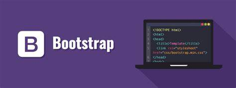

Tap Academy presents Bootstrap
What is Bootstrap
- Bootstrap is the most popular HTML, CSS and JavaScript framework for developing a responsive and mobile friendly website.
- It is absolutely free to download and use.
- It is a front-end framework used for easier and faster web development.
- It includes HTML and CSS based design templates for typography, forms, buttons, tables, navigation, modals, image carousels and many others.
- It can also use JavaScript plug-ins.
- It facilitates you to create responsive designs.

History of Bootstrap
Bootstrap was developed by Mark Otto and Jacob Thornton at Twitter.It was released as an open source product in August 2011 on GitHub.
In June 2014 Bootstrap was the No.1 project on GitHub.
Why use Bootstrap
Following are the main advantage of Bootstrap:
- It is very easy to use. Anybody having basic knowledge of HTML and CSS can use Bootstrap.
- It facilitates users to develop a responsive website.
- It is compatible on most of browsers like Chrome, Firefox, Internet Explorer, Safari and Opera etc.